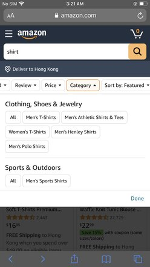

Visual Hierarchy
Amazon shopping chart
AmazonIt can tells from the 'add to cart' and 'buy now' button call-to-action buttons more prominent by using color.
Hick's Law
Amazon
amazon By eliminating chiices, amazom also make a good filter. A better filter make decision easily.
White Space and Clean Design
The instagram login page has right amount of white space. It' looks really clean and readable.